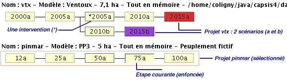
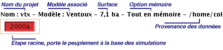
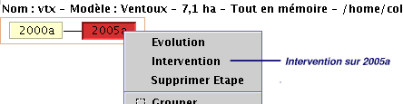
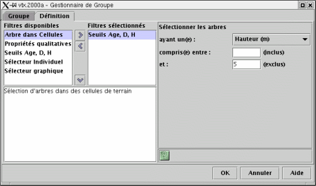
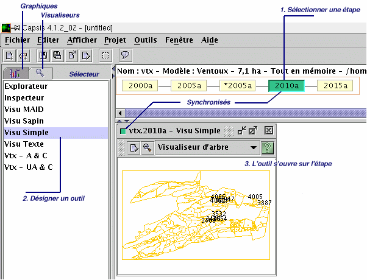
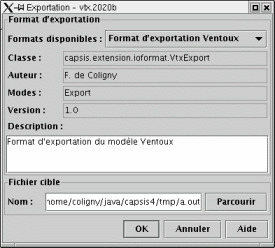

start => help_fr
Le manuel Capsis
Introduction
Capsis (Croissance d'Arbres en Peuplement avec simulation d'Interventions Sylvicoles) est une plate-forme de simulation pour l'étude de la croissance et de la dynamique des peuplements forestiers. Elle est organisée autour d'un noyau logiciel proposant des fonctionnalités communes et des structures de données génériques et de modules implémentant les modèles de dynamique pour les espèces et régions considérées.
En début de simulation, un peuplement initial doit être produit par le module choisi, par lecture d'un fichier d'inventaire ou encore par une méthode de génération virtuelle. L'étape racine ainsi constituée détermine un projet et peut servir de base à des simulations variées, en alternant des phases d'évolution et d'intervention pour constituer des scénarios sylvicoles .

Le processus d'évolution à partir d'une étape donnée est délégué au module. Ce dernier contient une boucle d'évolution qui invoque les méthodes de croissance, régénération, mortalité… (selon les modules) pour chaque étape à créer en fonction d'un pas de simulation personnalisé (libre).
L'intervention sur une étape donnée (éclaircie, élagage, fertilisation…) est déléguée à une extension (de type Intervener ) qui produit une nouvelle étape portant le peuplement résultant de l'intervention.
Des modèles de types différents (individuels dépendant ou indépendant des distances, type peuplement, types mixtes, temps continus…) peuvent coexister dans des modules Capsis décrivant des structures de données différentes. Chacun peut disposer d'un jeu d'extensions personnalisées. D'autres extensions, dites génériques, ont la particularité d'être compatibles avec plusieurs modules.
La plate-forme Capsis est co-développée par des informaticiens, gérant les problématiques techniques et communautaires, et des chercheurs responsables du développement de leur module.
Installation
Capsis est compatible avec les systèmes Windows et Linux (testés). Du fait de son implémentation en langage Java portable sur de nombreux systèmes, Capsis est vraissemblablement utilisable sur d'autres systèmes, mais seuls Windows et Linux sont officielement supportés.
L'installation de Capsis nécessite l'installation préalable d'une machine virtuelle Java de Sun Microsystems. Il suffit ensuite de décompresser l'archive Capsis dans un répertoire de votre choix comme expliqué dans la fiche d'installation : installation guide.
Frequently Asked Question
Si vous souhaitez connaître les grandes fonctionnalités de Capsis, suivez le tutoriel. Pour obtenir de l'aide sur un module ou une fonctionnalité de Capsis, consultez l'aide en ligne accessible depuis la boîte de dialogue A propos (sélection d'un module et icône Information) ou depuis les boutons Aide des dialogues de l'application.
Pour plus de renseignements sur le projet Capsis, consultez le site web Capsis . Pour des renseignements généraux ou techniques, demandez des informations par mail (voir contact).
Enfin, pour des renseignements d'ordre scientifique sur les modèles implémentés sous Capsis, joignez directement l'auteur du module par mail en consultant la page projet du site Capsis.
Projet, module, session
Chaque modèle de croissance ou de dynamique forestière implémenté dans Capsis correspond à un module de la plate-forme (ex: module mountain , pessières de montagne, Alpes françaises).
Pour utiliser un modèle donné, il faut créer un nouveau projet et lui associer le module choisi parmi la liste des modules disponibles sur la plate-forme. La phase d'initialisation qui suit permet de choisir des paramètres pour le modèle et un peuplement de départ pour les simulations dans ce projet. A l'issue de cette phase, on obtient un projet (fig. 1) contenant une étape racine,base des simulations à venir, portant le peuplement de départ.

Il est possible de travailler sur plusieurs projets en parallèle.Tous les projets ouverts font partie de la session de travail. On peut sauvegarder les projets séparément ou bien tous ensemble en sauvegardant toute la session pour une réouverture ultérieure plus rapide. Les projets sont toujours réouvrables individuellement, même s'il ont été sauvés en bloc avec la session. Le menu Fichier permet de gérer la session dans son ensemble alors que le menu Projet permet de gérer les projets individuellement.
Evolution
A partir de l'étape racine (ou par la suite d'une étape quelconque), on peut déclencher une phase d'évolution (fig.2) par action sur le menu contextuel étape ( clic droit sur l'étape choisie).

Positionnez les paramètres de l'évolution (nombre de jours, d'années, date cible (…) en fonction du modèle), puis validez. La méthode d'évolution du module est sollicitée et produit un certain nombre d'étapes qui sont rajoutées au scénario à la suite de l'étape de départ.
Intervention
Sur une étape du scénario, déclenchez une intervention de votre choix à l'aide du menu contextuel étape (fig. 3).

L'intervention une fois paramétrée et validée, unenouvelle étape portant son résultat est liée à l'étape de départ (ex: moins d'arbres si éclaircie).
Groupes
Les groupes concernent les peuplements constitués d'arbres individualisés des modèles arbres (dépendants ou indépendants des distances), ou les terrains constitués de cellules carrées ou polygonales.
La constitution d'un groupe s'effectue toujours relativement à l'étape courante (la dernière désignée par l'utilisateur). Le peuplement de cette étape sert de support à l'opération. On accède au Catalogue de groupes (fig. 4) à partir dumenu contextuel étape ou de l'icône Grouper située dans la barre de menu (ou dans un onglet de paramétrage d'un outil).

On constitue un groupe avec le Gestionnaire de groupes (fig.5), en combinant des filtres par raffinements successifs. Les filtres sont des extensions de la plate-forme qui se reconnaissent compatibles avec lesmodules par des séries de tests dynamiques (ex: les peuplements de ce module contiennent-ils des arbres spatialisés ?).

Une fois un groupe constitué (il porte alors un nom), il est sauvegardé et rechargé à chaque ouverture de Capsis. Les groupes sont utilisables dans certains outils (visualiseurs, extracteurs de données) pour étudier des sous populations (ex: arbres de plus de 35 m. de hauteur, cellules de la lisière nord).
Ouvrir et synchroniser les visualiseurs et graphiques
Pour suivre les simulations, il est possible d'ouvrir des visualiseurs et graphiques par action sur le Sélecteur.
Désigner une étape courante (clic-gauche) dans le gestionnaire de projets,
Désigner un outil dans le sélecteur (double clic-gauche),
L'outil s'ouvre, synchronisé sur l'étape qui se voit attribuer une couleur.

Pour déplacer les outils d'une étape vers une autre étape du même projet, cliquer l'étape colorée de départ, puis cliquer 2 fois sur l'étape cible. Pour fermer un outil, utiliser l'icône de fermeture dans sa barre de titre.Pour fermer tous les outils associés à une étape, ctrl-clic sur l'étape.
Visualiseurs
Accès par le Sélecteur (cf. section précédente).
Ce sont des outils synchronisables avec une étape de projet et qui donnent une représentation du peuplement attaché (fig.7). La représentation peut être graphique (carte, histogramme de distribution) ou non (sous forme de texte, tableau).

Généralement (mais pas toujours), les visualiseurs proposent la restriction à un groupe que l'on peut constituer à la volée par leur boîte de configuration.
Pour ouvrir un visualiseur, sélectionner une étape dans le gestionnaire de projets, puis désignez un visualiseur dans le sélecteur d'un clic de souris.
Graphiques
Accès par le Sélecteur (cf. section précédente).
Ce sont extracteurs de données qui fournissent des représentations de l'état d'un peuplement à une étape de projet donnée, ou encore de l'évolution d'une grandeur au cours du temps (fig.8).La différence importante avec les visualiseurs est que les extracteurs de données permettent de croiser des données provenant de plusieurs projets sur une même représentation (graphique ou non) pour comparaison.
Des extracteurs sont fournis pour les grandeurs dendrométriques classiques. Les modélisateurs peuvent écrire des extracteurs supplémentaires pour leurs besoins particuliers.
Pour ouvrir un extracteur de données, même démarche que pour un visualiseur (voir plus haut).

Pour ajouter un nouvel extracteur dans un graphique ouvert, désigner une étape dans le gestionnaire de projets, puis ctrl-cliquer dans l'extracteur.
Pour supprimer un extracteur d'un graphique, utiliser le menu contextuel (clic droit sur le graphique). Les graphiques sont configurables à partir du même menu contextuel.
Exportation
L'exportation est accessible à partir du menu contextuel d'étape si des composant d'export compatibles avec le module sont trouvés (fig. 9).

Ces composants décrivent l'exportation des données sous l'étape de référence vers un fichier dont on peut choisir le nom.
Outils génériques
Le menu Outils de la barre de menu générale propose des outils sans notion de compatibilité (ex: éditeur, gestionnaire d'extensions, surveillance mémoire…).
Boîte à outils
Ces outils particuliers sont accessibles par le menu contextuel d'étape (si disponibles). Ils proposent des méthodes d'anlayses, de connexion avec d'autres logiciels ou encore des représentations lourdes (ex: visualisation en trois dimensions).